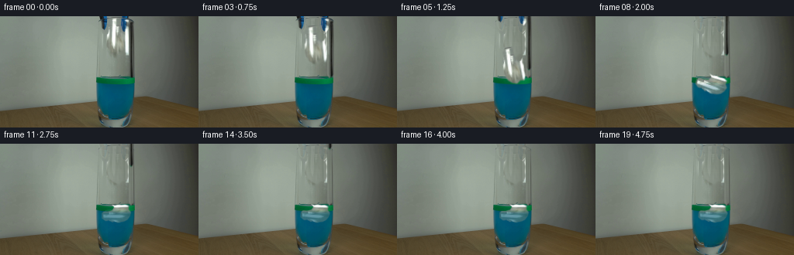
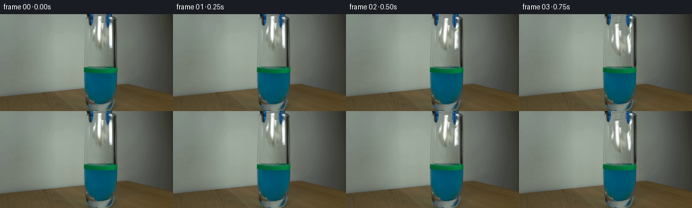

CODING AGENTS AS PIXEL WORLD MODELS
traex/GPT-5.6-Sol · 0136
点击播放 · 原生 RGB 像素
逐轮保存的候选
回放视频、检查图与代码变化。
每份候选均可单独播放。实际图片检查记录在下方工具轨迹中。
候选 01播放与检查图
点击播放 · 原生 RGB 像素


展开代码变化
--- 上一保存版本
+++ 本次保存版本
@@ -0,0 +1,246 @@
+#!/usr/bin/env python3
+"""Generate the requested fixed-camera paper-release demonstration.
+
+The first image is used both as frame zero and as the source of the real scene
+texture. Subsequent frames use small, deterministic, analytic 2-D motions:
+the paper is separated from the grabber, falls under gravity, turns as it
+meets the liquid, and then executes a damped floating motion.
+"""
+
+from pathlib import Path
+
+import cv2
+import numpy as np
+from PIL import Image
+
+import artifact_io
+
+
+H, W = 144, 256
+
+
+def soft_polygon(points, blur=0.85):
+ """Return an antialiased float mask for a polygon."""
+ scale = 4
+ mask = np.zeros((H * scale, W * scale), np.uint8)
+ pts = np.rint(np.asarray(points, np.float32) * scale).astype(np.int32)
+ cv2.fillPoly(mask, [pts], 255, lineType=cv2.LINE_AA)
+ mask = cv2.resize(mask, (W, H), interpolation=cv2.INTER_AREA)
+ if blur:
+ mask = cv2.GaussianBlur(mask, (0, 0), blur)
+ return mask.astype(np.float32) / 255.0
+
+
+def composite(dst, src, alpha):
+ """Alpha-composite src onto dst, all in float RGB."""
+ a = np.clip(alpha, 0.0, 1.0)[..., None]
+ return dst * (1.0 - a) + src * a
+
+
+def transform_layer(rgb, alpha, center, target, angle=0.0, sx=1.0, sy=1.0):
+ """Affine-transform a premultiplied full-frame texture layer."""
+ cx, cy = center
+ tx, ty = target
+ rad = np.deg2rad(angle)
+ c, s = np.cos(rad), np.sin(rad)
+ # Destination = A * (source-center) + target.
+ A = np.array([[sx * c, sy * s], [-sx * s, sy * c]], np.float32)
+ offset = np.array([tx, ty], np.float32) - A @ np.array([cx, cy], np.float32)
+ M = np.concatenate([A, offset[:, None]], axis=1)
+ premul = rgb * alpha[..., None]
+ wp = cv2.warpAffine(
+ premul, M, (W, H), flags=cv2.INTER_LINEAR,
+ borderMode=cv2.BORDER_CONSTANT, borderValue=0,
+ )
+ wa = cv2.warpAffine(
+ alpha, M, (W, H), flags=cv2.INTER_LINEAR,
+ borderMode=cv2.BORDER_CONSTANT, borderValue=0,
+ )
+ out = np.zeros_like(rgb)
+ nz = wa > 1e-5
+ out[nz] = wp[nz] / wa[nz, None]
+ return out, np.clip(wa, 0.0, 1.0)
+
+
+def translated_layer(rgb, alpha, dx, dy):
+ M = np.array([[1.0, 0.0, dx], [0.0, 1.0, dy]], np.float32)
+ premul = rgb * alpha[..., None]
+ wp = cv2.warpAffine(premul, M, (W, H), flags=cv2.INTER_LINEAR,
+ borderMode=cv2.BORDER_CONSTANT, borderValue=0)
+ wa = cv2.warpAffine(alpha, M, (W, H), flags=cv2.INTER_LINEAR,
+ borderMode=cv2.BORDER_CONSTANT, borderValue=0)
+ out = np.zeros_like(rgb)
+ nz = wa > 1e-5
+ out[nz] = wp[nz] / wa[nz, None]
+ return out, np.clip(wa, 0.0, 1.0)
+
+
+def replacement_field(source):
+ """Estimate the smooth, fixed backdrop hidden by the tool and paper."""
+ field = source.copy()
+ # The wall/background has a gentle left-to-right gradient. Robust samples
+ # immediately outside the setup reproduce it without introducing texture
+ # from an external source.
+ for y in range(0, 82):
+ left = np.median(source[y, 116:124], axis=0)
+ right = np.median(source[y, 176:184], axis=0)
+ for x in range(124, 176):
+ u = (x - 123.0) / 53.0
+ field[y, x] = left * (1.0 - u) + right * u
+ # Keep a hint of the source's fine sensor texture, but not its objects.
+ smooth = cv2.GaussianBlur(source, (0, 0), 2.2)
+ field[:82, 124:176] += 0.16 * (
+ source[:82, 124:176] - smooth[:82, 124:176]
+ )
+ return np.clip(field, 0, 255)
+
+
+def draw_ripples(frame, index, cx=150, cy=87):
+ """Add subdued, glass-clipped impact ripples."""
+ if index < 7 or index > 14:
+ return frame
+ age = index - 7
+ strength = max(0.0, 1.0 - age / 8.0)
+ layer = frame.copy()
+ line_mask = np.zeros((H, W), np.uint8)
+ ax = int(5 + age * 2.6)
+ ay = max(1, int(1 + age * 0.30))
+ cv2.ellipse(line_mask, (cx, cy), (ax, ay), 0, 190, 350, 255, 1,
+ lineType=cv2.LINE_AA)
+ if age >= 2:
+ cv2.ellipse(line_mask, (cx, cy + 1), (max(3, ax - 7), max(1, ay - 1)),
+ 0, 190, 350, 165, 1, lineType=cv2.LINE_AA)
+ # Restrict strictly to the interior of the glass and its level zone.
+ yy, xx = np.mgrid[:H, :W]
+ glass = (xx >= 125) & (xx <= 173) & (yy >= 83) & (yy <= 92)
+ a = (line_mask.astype(np.float32) / 255.0) * glass * (0.40 * strength)
+ color = np.empty_like(frame)
+ color[:] = (91.0, 159.0, 148.0)
+ return composite(layer, color, a)
+
+
+def build_frames(source_u8):
+ source = source_u8.astype(np.float32)
+
+ # The paper silhouette follows its irregular, crumpled outline in frame 0.
+ paper = soft_polygon([
+ (144, 1), (152, 1), (155, 4), (160, 4), (164, 8),
+ (163, 13), (166, 18), (164, 24), (166, 29), (165, 36),
+ (166, 42), (163, 49), (158, 48), (153, 52), (147, 50),
+ (142, 46), (139, 40), (138, 34), (137, 29), (139, 22),
+ (137, 17), (141, 13), (140, 7),
+ ], 0.65)
+
+ # Blue/black grabber pieces overlap the paper in the source. They are
+ # separated so the paper does not carry them downward with it.
+ tool_left = soft_polygon([
+ (127, 0), (138, 0), (139, 16), (136, 20), (131, 17),
+ (128, 10),
+ ], 0.55)
+ tool_right_top = soft_polygon([
+ (155, 0), (166, 0), (166, 17), (162, 22), (157, 19),
+ (155, 11),
+ ], 0.55)
+ tool_rail = soft_polygon([
+ (166, 0), (172, 0), (172, 76), (169, 80), (166, 76),
+ ], 0.55)
+ tool_right = np.maximum(tool_right_top, tool_rail)
+ tool_all = np.maximum(tool_left, tool_right)
+ paper *= (1.0 - np.clip(tool_all * 1.12, 0.0, 1.0))
+
+ # Clean plate: replace only the source areas occupied by moving layers.
+ field = replacement_field(source)
+ removal = np.clip(np.maximum(paper, tool_all), 0.0, 1.0)
+ clean = composite(source, field, removal)
+
+ frames = [source_u8.copy()]
+ center = (151.5, 27.0)
+
+ # Target paper motion per frame. The first quarter-second holds the exact
+ # pose; thereafter vertical acceleration is followed by a damped float.
+ poses = {
+ 1: ((151.5, 27.0), 0.0, 1.00, 1.00),
+ 2: ((151.2, 30.0), -3.0, 1.00, 1.00),
+ 3: ((150.4, 38.0), 4.0, 1.00, 1.00),
+ 4: ((151.4, 50.0), -7.0, 0.98, 0.98),
+ 5: ((149.8, 64.0), 9.0, 0.95, 0.94),
+ 6: ((151.0, 76.0), 20.0, 0.91, 0.90),
+ 7: ((149.7, 83.0), 42.0, 0.87, 0.85),
+ 8: ((150.2, 87.0), 72.0, 0.83, 0.78),
+ 9: ((150.0, 89.0), 86.0, 0.81, 0.73),
+ }
+
+ for i in range(1, 20):
+ frame = clean.copy()
+
+ # The jaws part by a few pixels as they release, then the grabber is
+ # smoothly lifted out of the locked frame.
+ if i == 1:
+ opening, lift = 0.0, 0.0
+ elif i == 2:
+ opening, lift = 1.0, 0.0
+ elif i == 3:
+ opening, lift = 2.0, 1.0
+ else:
+ opening = max(0.0, 2.0 - 0.45 * (i - 3))
+ lift = min(88.0, 4.5 * (i - 3) ** 1.16)
+ lrgb, la = translated_layer(source, tool_left, -opening, -lift)
+ rrgb, ra = translated_layer(source, tool_right, opening, -lift)
+ frame = composite(frame, lrgb, la)
+ frame = composite(frame, rrgb, ra)
+
+ if i <= 9:
+ target, angle, sx, sy = poses[i]
+ else:
+ t = i - 9
+ # Buoyant paper settles horizontally with small damped rocking.
+ target = (
+ 150.0 + 0.19 * t,
+ 89.0 + 1.25 * np.exp(-0.22 * t) * np.sin(1.33 * t),
+ )
+ angle = 88.0 + 5.2 * np.exp(-0.20 * t) * np.sin(1.10 * t)
+ sx = 0.80
+ sy = 0.72
+
+ prgb, pa = transform_layer(source, paper, center, target, angle, sx, sy)
+
+ # Once immersed, paper is seen through blue liquid and the marked
+ # green surface band: contrast falls and blue-green absorption rises.
+ yy = np.arange(H, dtype=np.float32)[:, None]
+ submerged = np.clip((yy - 84.5) / 9.0, 0.0, 0.64)
+ wet_progress = np.clip((i - 6) / 4.0, 0.0, 1.0)
+ water_mix = submerged * wet_progress * pa
+ water_view = 0.58 * clean + 0.42 * np.array([18.0, 104.0, 119.0], np.float32)
+ prgb = composite(prgb, water_view, water_mix)
+ frame = composite(frame, prgb, pa)
+
+ frame = draw_ripples(frame, i)
+
+ # Reassert the fixed glass boundary; moving layers should never spill
+ # beyond the transparent vessel's inner walls.
+ outside_glass = np.zeros((H, W), np.float32)
+ if i >= 6:
+ outside_glass[77:, :124] = 1.0
+ outside_glass[77:, 175:] = 1.0
+ frame = composite(frame, source, outside_glass)
+
+ frames.append(np.clip(np.rint(frame), 0, 255).astype(np.uint8))
+
+ result = np.stack(frames, axis=0)
+ # Contract-critical identity, protected against any future refactor.
+ result[0] = source_u8
+ return result
+
+
+def main():
+ case_dir = Path(__file__).resolve().parent
+ source = np.asarray(Image.open(case_dir / "first_frame.png").convert("RGB"),
+ dtype=np.uint8)
+ if source.shape != (H, W, 3):
+ raise ValueError(f"unexpected first-frame shape: {source.shape}")
+ frames = build_frames(source)
+ artifact_io.save(frames, case_dir)
+
+
+if __name__ == "__main__":
+ main()
可观测工具轨迹
实际执行的命令与返回图片。
命令 1exit 0
/bin/bash -lc "cat prompt.txt && printf '\\n--- GENERATION RULES ---\\n' && cat GENERATION_RULES.md"
命令 2exit 0
/bin/bash -lc "find . -maxdepth 2 -type f -printf '%p\\n' | sort && printf '\\n--- tools ---\\n' && command -v ffmpeg || true && command -v python3 || true"
命令 3exit 0
/bin/bash -lc "python3 - <<'PY'
from PIL import Image
import numpy as np
im=np.array(Image.open('first_frame.png').convert('RGB'))
print(im.shape, im.dtype, im.min(), im.max())
# stats by rows/cols: mean RGB and saturation/darkness extrema
for y in range(0,144,12):
a=im[y:y+12]
print('row',y, tuple(np.mean(a,axis=(0,1)).round(1)), 'dark',np.mean(np.max(a,2)<60).round(3),'blue',np.mean((a[:,:,2]>a[:,:,0]*1.2)&(a[:,:,2]>a[:,:,1]*1.1)).round(3),'green',np.mean((a[:,:,1]>a[:,:,0]*1.2)&(a[:,:,1]>a[:,:,2]*1.1)).round(3))
print('columns')
for x in range(0,256,16):
a=im[:,x:x+16]
print(x, tuple(np.mean(a,axis=(0,1)).round(1)), 'dark',np.mean(np.max(a,2)<60).round(3),'blue',np.mean((a[:,:,2]>a[:,:,0]*1.2)&(a[:,:,2]>a[:,:,1]*1.1)).round(3),'green',np.mean((a[:,:,1]>a[:,:,0]*1.2)&(a[:,:,1]>a[:,:,2]*1.1)).round(3))
PY"命令 4exit 0
/bin/bash -lc "python3 - <<'PY'
try:
import cv2; print('cv2',cv2.__version__)
except Exception as e: print('no cv2',e)
from PIL import Image
import numpy as np
im=np.array(Image.open('first_frame.png').convert('RGB'))
# print luminance ascii at 4x4 blocks
chars=' .,:;irsXA253hMHGS#9B&@'
lum=im@np.array([.2126,.7152,.0722])
for y in range(0,144,4):
s=''
for x in range(0,256,4):
v=lum[y:y+4,x:x+4].mean()
s+=chars[min(len(chars)-1,int(v/256*len(chars)))]
print(s)
PY"命令 5exit 0
/bin/bash -lc "python3 - <<'PY'
import cv2, numpy as np
from PIL import Image
im=np.array(Image.open('first_frame.png').convert('RGB'))
# kmeans lab/RGB pixel coords summary
Z=im.reshape(-1,3).astype(np.float32)
crit=(cv2.TERM_CRITERIA_EPS+cv2.TERM_CRITERIA_MAX_ITER,100,.2)
_,lab,cen=cv2.kmeans(Z,16,None,crit,10,cv2.KMEANS_PP_CENTERS)
for k,c in sorted(enumerate(cen), key=lambda z: z[1].mean()):
ys,xs=np.where(lab.reshape(im.shape[:2])==k)
print(k, np.round(c).astype(int),len(xs),'x',round(xs.mean(),1),np.percentile(xs,[5,25,50,75,95]).astype(int),'y',round(ys.mean(),1),np.percentile(ys,[5,25,50,75,95]).astype(int))
# connected contours masks for color concepts
hsv=cv2.cvtColor(im,cv2.COLOR_RGB2HSV)
concepts={
'dark': np.max(im,2)<70,
'blue':(im[:,:,2]>im[:,:,0]*1.18)&(im[:,:,2]>im[:,:,1]*1.08)&(im[:,:,2]>65),
'green':(im[:,:,1]>im[:,:,0]*1.18)&(im[:,:,1]>im[:,:,2]*1.08)&(im[:,:,1]>60),
'white':(np.min(im,2)>170),
'neutral_bright':(np.max(im,2)-np.min(im,2)<30)&(np.mean(im,2)>150),
}
for name,m in concepts.items():
n,ls,stats,cent=cv2.connectedComponentsWithStats(m.astype('uint8'))
print('\\n',name,'count',m.sum())
for i in np.argsort(stats[1:,4])[::-1][:12]+1:
x,y,w,h,a=stats[i]; print(a,(x,y,w,h),np.round(cent[i],1))
PY"命令 6exit 0
/bin/bash -lc "python3 - <<'PY'
from PIL import Image
import numpy as np, cv2
im=np.array(Image.open('first_frame.png').convert('RGB'))
# crop classify each 2x2 using color: W bright, K dark, B blue, G green, N neutral + lum chars
for y in range(0,100,2):
s=''
for x in range(115,185,2):
c=im[y:y+2,x:x+2].mean((0,1)); mx=c.max(); mn=c.min(); L=c.mean()
if mx<55: z='K'
elif c[2]>c[0]*1.18 and c[2]>c[1]*1.08: z='B'
elif c[1]>c[0]*1.18 and c[1]>c[2]*1.08: z='G'
elif mn>200: z='W'
elif mx-mn<30 and L>160: z='w'
else: z=' .:-=+*#%@'[min(9,int(L/256*10))]
s+=z
print(f'{y:03}',s)
PY"命令 7exit 0
/bin/bash -lc "python3 - <<'PY'
from PIL import Image
import numpy as np
im=np.array(Image.open('first_frame.png').convert('RGB'))
# print representative RGB averaged 2x2, y every 4 x 124..176 every 4
for y in range(0,80,4):
print('\\ny',y)
for x in range(124,176,4):
c=im[y:y+4,x:x+4].mean((0,1)).astype(int)
print(f'{x}:{c[0]:03},{c[1]:03},{c[2]:03}',end=' ')
print()
PY"命令 8exit 0
/bin/bash -lc "python3 - <<'PY'
import cv2,numpy as np
im=cv2.imread('first_frame.png')
g=cv2.cvtColor(im,cv2.COLOR_BGR2GRAY)
e=cv2.Canny(g,30,80)
for y in range(0,144,2):
print(f'{y:03}',end=' ')
for x in range(100,200,2):
q=e[y:y+2,x:x+2]
print('#' if q.mean()>100 else '+' if q.max() else ' ',end='')
print()
PY"命令 9exit 0
/bin/bash -lc "python3 - <<'PY'
from PIL import Image
import numpy as np
im=np.array(Image.open('first_frame.png').convert('RGB'))
# grid every pixel classify around liquid rim, x116-180 y68-94
for y in range(68,95):
s=''
for x in range(116,181):
c=im[y,x].astype(int); mx=c.max();mn=c.min();L=c.mean()
if mx<45:z='K'
elif mx<70:z='k'
elif c[2]>c[0]*1.25 and c[2]>c[1]*1.12 and c[2]>60:z='B'
elif c[1]>c[0]*1.22 and c[1]>c[2]*1.10 and c[1]>55:z='G'
elif mn>185:z='W'
elif mx-mn<25 and L>150:z='w'
else:z=' .:-=+*#%@'[min(9,int(L/256*10))]
s+=z
print(f'{y:03} {s}')
PY"命令 10exit 0
/bin/bash -lc "python3 - <<'PY'
from PIL import Image
import numpy as np
im=np.array(Image.open('first_frame.png').convert('RGB'))
chars=' .,:;irsXA253hMHGS#9B&@'
for y in range(61):
s=''
for x in range(120,178):
c=im[y,x]; L=c@[.2126,.7152,.0722]
ch=chars[min(len(chars)-1,int(L/256*len(chars)))]
# lowercase-ish indicators by color substituting some char
if c[2]>c[0]*1.25 and c[2]>c[1]*1.12: ch='b'
s+=ch
print(f'{y:02} {s}')
PY"命令 11exit 0
/bin/bash -lc "python3 - <<'PY'
from PIL import Image
import numpy as np
im=np.array(Image.open('first_frame.png').convert('RGB'))
for y in range(72,90):
print('\\ny=',y)
for x in range(122,176,2):
c=im[y:y+1,x:x+2].mean((0,1)).astype(int)
print(f'{x}:{c[0]:03}/{c[1]:03}/{c[2]:03}',end=' ')
print()
PY"命令 12exit 0
/bin/bash -lc "python3 - <<'PY'
from PIL import Image
import numpy as np
im=np.array(Image.open('first_frame.png').convert('RGB')).astype(float)
for y in range(0,61):
# interpolate from medians x118:126 to x176:184
l=np.median(im[y,116:126],0); r=np.median(im[y,176:186],0)
s=''
for x in range(126,176):
bg=l+(r-l)*(x-125)/51
c=im[y,x]; d=np.linalg.norm(c-bg)
if d<18: z=' '
elif c[2]-c[0]>25: z='B'
elif c.mean()<75: z='D'
elif c.mean()>180: z='W'
elif d>70:z='#'
elif d>40:z='+'
else:z='.'
s+=z
print(f'{y:02} {s}')
PY"命令 13exit 0
/bin/bash -lc 'cat artifact_io.py'
命令 14exit 0
/bin/bash -lc "python3 - <<'PY'
from PIL import Image
import numpy as np
im=np.array(Image.open('first_frame.png').convert('RGB'))
for y in range(0,61):
def runs(mask):
xs=np.where(mask)[0]; out=[]
if len(xs):
sp=np.split(xs,np.where(np.diff(xs)>1)[0]+1); out=[(int(a[0]),int(a[-1])) for a in sp]
return out
roi=im[y]
bri=np.min(roi,1)>170
dark=np.max(roi,1)<75
blue=(roi[:,2]>roi[:,0]*1.2)&(roi[:,2]>roi[:,1]*1.08)&(roi[:,2]>65)
print(y,'W', [r for r in runs(bri) if r[1]>=120 and r[0]<=180], 'D',[r for r in runs(dark) if r[1]>=120 and r[0]<=180], 'B',[r for r in runs(blue) if r[1]>=120 and r[0]<=180])
PY"命令 15exit 0
/bin/bash -lc "python3 generate.py && python3 - <<'PY'
from pathlib import Path
import numpy as np
from PIL import Image
z=np.load('pixels.npz')['pixels']
frames=np.stack([np.array(Image.open(f'frames/{i:02}.png')) for i in range(20)])
first=np.array(Image.open('first_frame.png').convert('RGB'))
print('pixels',z.shape,z.dtype,'frames',frames.shape,frames.dtype)
print('frame0 exact',np.array_equal(frames[0],first),'maxerr',np.abs(frames[0].astype(int)-first).max())
for i in range(20):
d=np.abs(frames[i].astype(np.int16)-first.astype(np.int16))
print(i,'changed',np.any(d,2).sum(),'mae',round(d.mean(),3),'range',frames[i].min(),frames[i].max())
print('outputs',[(p.name,p.stat().st_size) for p in Path('.').glob('*') if p.is_file()])
PY"命令 16exit 0
/bin/bash -lc "python3 - <<'PY'
from PIL import Image
import numpy as np
F=np.stack([np.asarray(Image.open(f'frames/{i:02d}.png').convert('RGB')) for i in range(20)])
for i in range(1,20):
d=np.max(np.abs(F[i].astype(np.int16)-F[i-1].astype(np.int16)),2)
y,x=np.where(d>5)
print(f'{i-1:02}->{i:02}: n={len(x):4d} bbox={(int(x.min()),int(y.min()),int(x.max()),int(y.max())) if len(x) else None} centroid={(round(x.mean(),1),round(y.mean(),1)) if len(x) else None} mean={d[d>5].mean() if len(x) else 0:.1f}')
# confirm fixed areas (outside working region) never change
fixed=np.ones((144,256),bool); fixed[0:115,115:185]=False
print('max fixed-region deviation',np.abs(F[:,fixed].astype(int)-F[0,fixed].astype(int)).max())
PY"命令 17exit 0
/bin/bash -lc 'python3 -m py_compile generate.py artifact_io.py && sha256sum first_frame.png pixels.npz frames/00.png generate.py > .tmp/hashes_before && python3 generate.py && sha256sum first_frame.png pixels.npz frames/00.png generate.py > .tmp/hashes_after && diff -u .tmp/hashes_before .tmp/hashes_after && cat .tmp/hashes_after'
保存候选 1 份；完成命令 17 次；可验证图片返回 0 张。原始 API 响应与完整日志保留在本地。